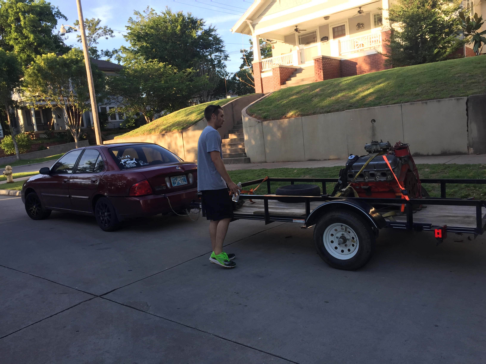
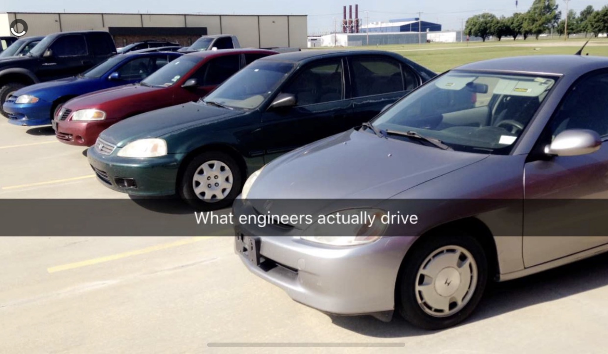
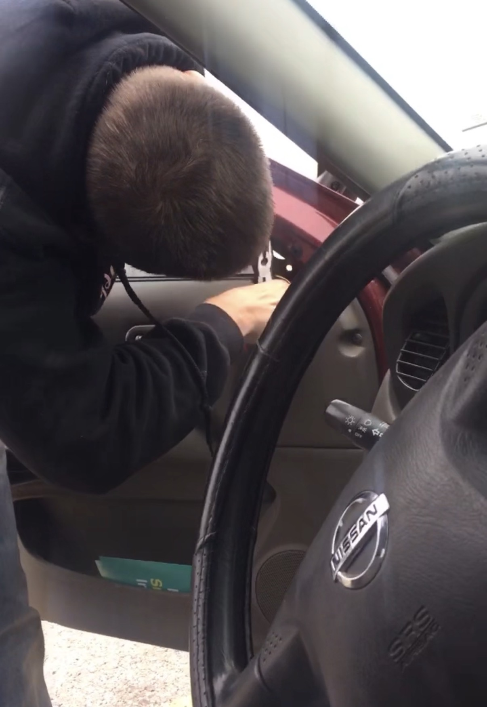
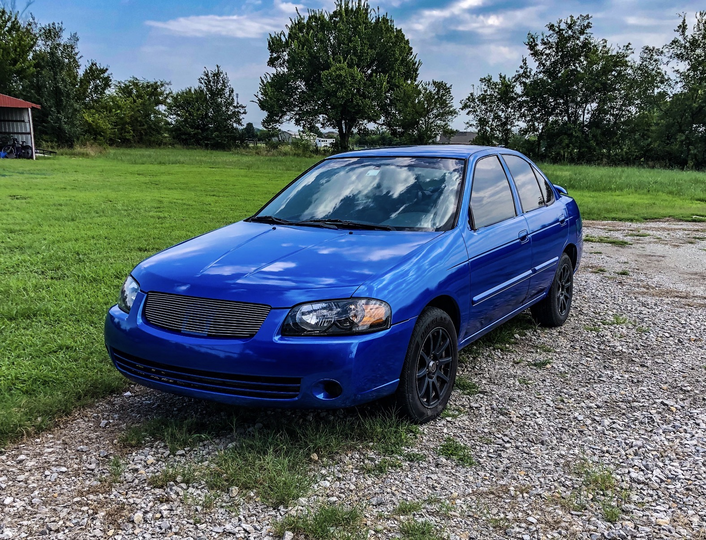
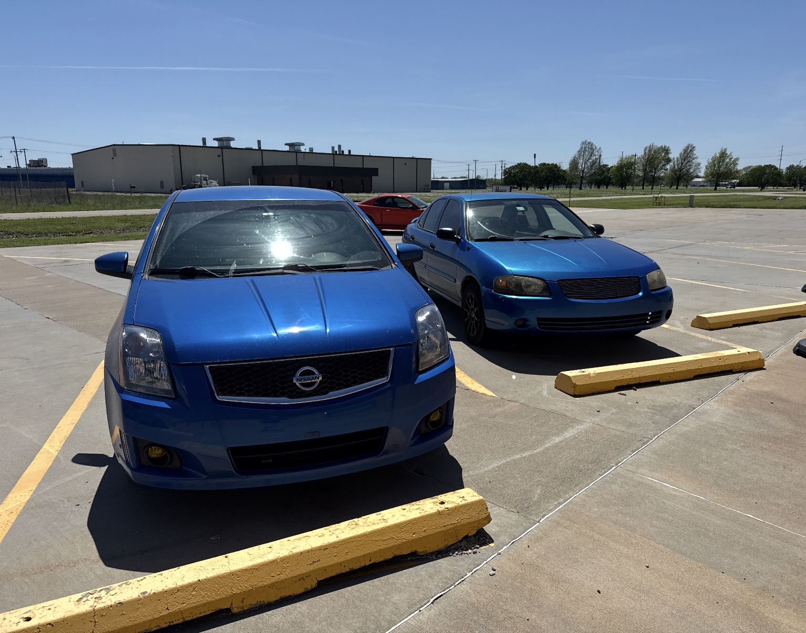

The Million Dollar Sentra

I grew up in southwestern Oklahoma, aka the shady 580. Trucks are kind of a big deal down here, and in the truck community, it seems like a direct tie to success and how much of a man you are. Shortly after graduating high school, I moved to Stillwater to pursue an engineering degree. I had an old C10 squarebody that I knew I would need to sell to make life affordable on a student’s salary. It was horrendous on gas. I did take my wife (then girlfriend) to prom in it so it was very special. Hopefully I get to write about that truck someday. So my ever-so-loving grandpa bought a car he swore would be perfect for me: a 2005 Nissan Sentra 1.8 manual with 58k miles. Luckily for me, he sold it to me for $1,000 more than he bought it for. That's his love language. Money.
All through my tenure at Stillwater, I drove this grandma-looking car. It had a CD player and a radio. Also an AC, which was useful for the summer months there. It became my truck slowly. A vehicle of pure utility and zero street cred.
Some examples - I would take my dog, the sweetest beagle rescue from the humane society, Dixie, fishing in it! We had our poles and fresh bait perch in the trunk. The poles would need to be ran through the trunk to the front seat. On many occasions, the fish spilled over in the back. We couldn't hear that because we were listening to some old CD essentially on repeat. There will be more on the life of a burnt CD, trust me, but that shall come later.
Did I mention I love everything old? Trust me, it ain’t cool until the new wears off. Example - I had an old Walkman and the single metal-band headphones I used to take to class with me and walk around campus with. I’ll stop you there - no, no, I did not have many friends at school.
I ended up actually getting close to graduating and started looking at new trucks after I got my first job offer. I was ready to get out of that car and enjoy the life of a middle-class engineer. I needed a four-door, new Silverado, black, with the V8. I must have wasted a month of my life dreaming of escaping this Sentra.
It was so ugly, and by now the paint was peeling from a bad repair job my grandpa did on the front fender, had a dent where Jessica was drunk and backed into the side of it, the antenna was bent from hitting an owl fishing with Dixie one night, the lights would stop working because of a loose wire on the trailer receiver I put on to tow a small jon boat and trailer around.
Thankfully, no one would approve me any money since I didn't actually have that paycheck yet. I still remember my first day of work, rolling up to the parking lot and seeing a few other cars like mine.
These were cars of new hires and of veteran engineers. It was interesting that people who I knew were better off than most had a car similar to that of a recent grad who couldn't afford a deposit on a rental house.
Perhaps my whole perception was wrong of success. That was the only thing I could figure out.
So time goes on, another year goes by, and my 59k Sentra now has 200k miles. The engine gets a slight knock in it, and my wife says, perhaps you should get a new car now. So I did what any reasonable person wouldn't do. I bought a Japan motor off eBay and had it shipped to my house for $350 dollars. Kyle and Jonathan helped me get it in, in their garage, for a case of beer.
We filled the oil up on Saturday night, and on Sunday morning, my wife and I set sail for Napanee, Ontario, hometown of Avril Lavigne! My parents lived there at the time. The drive was 32 hours total, and we did it straight through. I fell asleep once and hit a construction barrel somewhere near Michigan. Took off the mirror cleanly.

We stopped at an AutoZone and bought a mirror that didn't fit it and attached it with some self-tapping screws and hopium. We made it through customs and eventually made it to Napanee, well, a smaller town south of there named Bath, right on Lake Ontario.
On the way back home, my dad came to Niagara Falls with us. Going through customs, the guard asked me, "Will this car make it all the way to Oklahoma?" Which I replied yes to. He then said, "I wouldn't let my daughter ride in it. Have a good day," and he waved me through.
Those are just some of the memories that come to mind when I think of that car. I jokingly put a for-sale sign on it years later that said "Sentra for sale $1,000,000." I did this in hopes a celebrity would think it was funny and actually buy it. I thought for sure that's the only way to become a millionaire, right?
Well, it turns out not having a car payment, learning to fix your own mechanical problems, and adopting a frugal lifestyle is another way.
As the miles continued to grow, I told myself I could finally relieve myself and get a new car when I was, in fact, a millionaire. Some time went by, more memories than I can ever remember, and my friend Jonathan gave me an aux cord that I could use my iPhone to listen to something other than my burnt CD. In fact, that was the only thing I kept when I finally was ready to sell it to my friend who was wanting a gas saver.

One note is I always wanted a Subaru STI, Rally Blue with a spoiler. The once-red Nissan was now Rally Blue, with a spoiler and new black interior. I had done the conversion a few years back when I bought a wrecked Sentra Spec V 2004. The name was then forever the Nissanaru Sentreza.
How could I forget painting it in the field with my friend Jackson, who wore only his underwear while spraying it? It looked very Breaking Bad.
I bring this up for an important point. I was finally ready to buy my dream car, and I was ready to let go of the Sentreza. My wife had asked me what I was going to get. A few days later, just like the engine delivery years prior, a car was shipped to our house. It was a 2008 Nissan Sentra, racing blue, that had been wrecked and totaled out. I spent a few months getting it ready, and to this day, it is still the car I drive.

You see, your worth isn't tied up in what you drive, how nice your house is, or what your job status is. It's about your time on earth, how you choose to live & love, and the memories you get to create.
My Sentreza did everything I asked it to and more. From campfires on a sandy riverbank to pulling a trailer with a blown tire sparking through the night. Other than getting asked if you have any drugs to sell, I can't think of a negative owning that car and the lessons it taught me.
It has fundamentally shaped my life in how I see time, money, and helped me prioritize how I want to continue living.
My advice for anyone still reading is weigh the options. Don't let the other voices in the world get you down about the success of today. There is a sense of freedom that comes with detaching yourself from self-worth tied to material things, learning skills to take care of your own problems, and creating adventures that yield a lifetime of memories.
I guess I'm saying, I hope everyone finds their million-dollar Sentra.
← back to blog